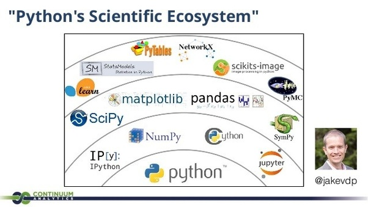

Machine learning... computer vision.. python.. many things were to be explored. I was damm confused where to
start...
.
Started with python referred the article
"Python for Beginners: Learn Python Programming" published by Packt Publishing 2018
It was very basic overview for python, it covered
installation,
Data-Types () String , Booleans , Number & Math, Functions, Lists, Dictionaries, Tuples )
Files
Modules
I considered this basic coz I was still not clear
- what is Pandas ??
- Where s NumPy arrays ??
- Whats Anaconda ??
- Whats SciPy ??
- What is Scikit-learn??
- When should I start with Computer Vision ??
whats NumPy ??
NumPy is a library for efficient array computations, modeled after Matlab. Arrays differ from plain Python lists
in the way they are stored and handled.
Whats SciPy ??
SciPy is a collection of mathematical algorithms and convenience functions built on the Numpy extension of
Python.
what is Pandas ??
Software library written for data manipulation and analysis in Python. Offers data structures and operations for
manipulating numerical tables and time series
What is Scikit-learn??
Scikit-learn is a Python module for machine learning built on top of SciPy and distributed under the 3-Clause BSD
license.
Whats Anaconda ??
Anaconda is a python and R distribution. It aims to provide everything you need (python wise) for data science
"out of the box".
It includes:
The core python language
100+ python "packages" (libraries)
Spyder (IDE/editor - like pycharm) and Jupyter
conda, Anaconda's own package manager, used for updating Anaconda and packages
Below image gave a perfect overiew to me
Link to Image

I thought i had a high level overview of what i wanted to study ahead.
Since there were many things to be explored.. i thought it would be better if I focussed on my first application i want to build
What I wanted to build was " Face Recognition and Detection" I saw a sample code online which worked to some extent.
So i focussed on the libraries which where used in that tutorial.
It used packages like
- from sklearn.preprocessing import LabelEncoder
- from sklearn.svm import SVC
- import argparse
- import pickle
- from imutils.video import VideoStream
- import numpy as np
- import imutils
- import cv2
- import os
TO BE Continued...